N = 5; T = 150
trajs_lw = constant_velocity_generator(N,
T,
time_sampler = pdf_discrete_sample,
pdf_func=pdf_powerlaw,
L_max = T,
beta = 1)
def single_steps(num_samples):
return np.ones(num_samples)
trajs_rw = constant_velocity_generator(N, T, time_sampler = single_steps, velocity = 1.2)Mean First Passage Times in 1D and 2D environments
1D
constant_velocity_generator
constant_velocity_generator (N, T, time_sampler, velocity=1, **sample_args)
Given a sampler for length of time steps, generates a trajectory considering a constant velocity in the sampled times. After each time step, we sample a new direction.
| Type | Default | Details | |
|---|---|---|---|
| N | Number of trajectories | ||
| T | Length of trajectories | ||
| time_sampler | Sampler of time of constant velocity | ||
| velocity | int | 1 | Velocity |
| sample_args |
fig, ax = plt.subplots(1, 2, figsize = (5,3))
ax[0].plot(trajs_lw.transpose())
ax[0].set_title('LW')
ax[1].plot(trajs_rw.transpose())
ax[1].set_title('RW');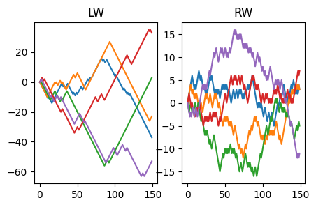
MFPT calculators
Uniformed
mfpt_rw
mfpt_rw (N:int, T:int, x0:float, Ls:list, traj_generator:Callable, max_loop=5, save=None, **args_generator)
Calculates MFPT to boundaries at 0 and L starting in x0
| Type | Default | Details | |
|---|---|---|---|
| N | int | Number of trajectories | |
| T | int | Lengths of trajectories | |
| x0 | float | Starting point of walk | |
| Ls | list | Boundary position | |
| traj_generator | Callable | Function generating the walk (must start in x0 = zero) | |
| max_loop | int | 5 | Max number of while loop if some walks do not reach the boundary |
| save | NoneType | None | |
| args_generator |
Informed
mfpt_informed_rw
mfpt_informed_rw (N:int, T:int, x0:float, Ls:list, traj_generator:Callable, max_loop=5, time_sampler=None, save=None, **args_generator)
Calculates MFPT to boundaries at 0 and L starting in x0 with a traj generator informed on the scales of the sysmte (x0 and L)
| Type | Default | Details | |
|---|---|---|---|
| N | int | Number of trajectories | |
| T | int | Lengths of trajectories | |
| x0 | float | Starting point of walk | |
| Ls | list | Boundary position | |
| traj_generator | Callable | Function generating the walk (must start in x0 = zero) | |
| max_loop | int | 5 | Max number of while loop if some walks do not reach the boundary |
| time_sampler | NoneType | None | |
| save | NoneType | None | |
| args_generator |
Results
Discrete walking
In this case we are already doing constant velocities, hence we can use the generator below:
rw_generator
rw_generator (N, T)
N = int(1e2)
T = int(1e6)
x0 = 3
Ls = np.arange(15, 100)
reps = 20
results = np.array(Parallel(n_jobs=20)(delayed(mfpt_rw)(N = N, T = T, x0 = x0, Ls = Ls,
traj_generator = rw_generator)
for _ in tqdm(range(reps))), dtype = object)mean = results.mean(0)
plt.plot(Ls, mean[0]*(Ls/Ls[0])**2,c = 'k', label = r'$\sim L^2$')
plt.plot(Ls, mean[0]*(Ls/Ls[0]), c = 'k',ls = '--', label = r'$\sim L$')
plt.loglog(Ls, mean,'o', alpha = 0.3)
plt.legend()<matplotlib.legend.Legend>
Exponential
exp_time_generator
exp_time_generator (num_samples)
N = int(1e2)
T = int(1e4)
x0 = 3
Ls = np.arange(15, 100)
reps = 20
results = np.array(Parallel(n_jobs=20)(delayed(mfpt_rw)(N = N, T = T, x0 = x0, Ls = Ls,
traj_generator = constant_velocity_generator,
time_sampler = exp_time_generator)
for _ in tqdm(range(reps))), dtype = object)mean_exp = results.mean(0)
plt.plot(Ls, mean_exp[0]*(Ls/Ls[0])**2,c = 'k', label = r'$\sim L^2$')
plt.plot(Ls, mean_exp[0]*(Ls/Ls[0]), c = 'k',ls = '--', label = r'$\sim L$')
plt.loglog(Ls, mean_exp,'o', alpha = 0.3, label = 'Exponential')
plt.loglog(Ls, mean,'o', alpha = 0.3, label = 'Discrete')
plt.legend()
plt.xlabel('MFPT'); plt.ylabel('L'); plt.title(fr'$x_0 =$ {x0}')
plt.ylim(ymax = 500)(23.655963721815578, 500)
Biexponential
Biexp
Biexp (informed=False, **args)
Initialize self. See help(type(self)) for accurate signature.
biexp_time_generator
biexp_time_generator (num_samples, **sample_kwargs)
bi = Biexp(informed = False, w1 = 0.1, d1 = 1, d2 = 200)
bi_rng = bi.sample(int(1e6))
h, e = np.histogram(bi_rng, bins = np.linspace(0.1,100, 2000), density=True)
plt.loglog(e[:-1], h)
plt.plot(e, bi.pdf(e)*(h[0]/bi.pdf(e[0])), alpha = 0.8)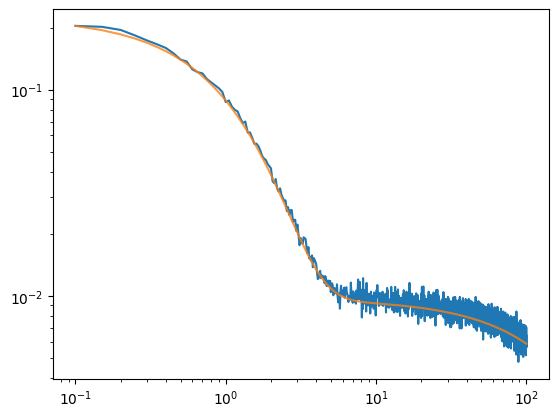
Uninformed
N = int(1e2)
T = int(1e4)
x0 = 3
Ls = np.arange(15, 100)
reps = 20
results = np.array(Parallel(n_jobs=20)(delayed(mfpt_rw)(N = N, T = T, x0 = x0, Ls = Ls,
traj_generator = constant_velocity_generator,
time_sampler = biexp_time_generator, w1 = 0.5, d1 = 1, d2 = 5)
for _ in tqdm(range(reps))), dtype = object)
mean_uninf_biexp = results.mean(0)plt.plot(Ls, (Ls/Ls[0])**(1/2),c = 'k', label = r'$\sim \sqrt{L}$')
plt.plot(Ls, (Ls/Ls[0]), c = 'k',ls = '--', label = r'$\sim L$')
plt.loglog(Ls, mean_uninf_biexp/mean_uninf_biexp[0],'o', alpha = 0.3, label = 'Uninformed bi-exponential')
plt.loglog(Ls, mean_exp/mean_exp[0],'o', alpha = 0.3, label = 'Exponential')
plt.loglog(Ls, mean/mean[0],'o', alpha = 0.3, label = 'Discrete')
plt.legend()
plt.ylabel('MFPT'); plt.xlabel('L'); plt.title(fr'$x_0 =$ {x0}')Text(0.5, 1.0, '$x_0 =$ 3')
Informed
N = int(1e2)
T = int(1e4)
x0 = 3
Ls = np.arange(15, 100)
reps = 20
results = np.array(Parallel(n_jobs=10)(delayed(mfpt_informed_rw)(N = N, T = T, x0 = x0, Ls = Ls,
traj_generator = constant_velocity_generator,
time_sampler = biexp_time_generator)
for _ in tqdm(range(reps))), dtype = object)
mean_biexp = results.mean(0)plt.plot(Ls, (Ls/Ls[0])**(1/2),c = 'k', label = r'$\sim \sqrt{L}$')
plt.plot(Ls, (Ls/Ls[0]), c = 'k',ls = '--', label = r'$\sim L$')
plt.loglog(Ls, mean_biexp/mean_biexp[0],'o', alpha = 0.3, label = 'Informed bi-exponential')
plt.loglog(Ls, mean_uninf_biexp/mean_uninf_biexp[0],'o', alpha = 0.3, label = 'Uninformed bi-exponential')
plt.loglog(Ls, mean_exp/mean_exp[0],'o', alpha = 0.3, label = 'Exponential')
plt.loglog(Ls, mean/mean[0],'o', alpha = 0.3, label = 'Discrete')
plt.legend()
plt.ylabel('MFPT'); plt.xlabel('L'); plt.title(fr'$x_0 =$ {x0}')Text(0.5, 1.0, '$x_0 =$ 3')
Power-law
\(\beta=1\), multiple repetitions
N = int(1e2)
T = int(1e5)
x0 = 3
Ls = np.arange(15, 100)
beta = 1
results = np.array(Parallel(n_jobs=10)(delayed(mfpt_rw)(N = N, T = T, x0 = x0, Ls = Ls,
traj_generator = constant_velocity_generator,
time_sampler = pdf_discrete_sample,
pdf_func=pdf_powerlaw,
L_max = T,
beta = beta)
for _ in tqdm(range(reps))), dtype = object)
mean_pw = results.mean(0)Multiple \(\beta\)
N = int(1e3)
T = int(1e5)
x0 = 3
Ls = np.arange(15, 100)
betas = np.linspace(0.1, 1.5, 10)
results = np.array(Parallel(n_jobs=len(betas))(delayed(mfpt_rw)(N = N, T = T, x0 = x0, Ls = Ls,
traj_generator = constant_velocity_generator,
time_sampler = pdf_discrete_sample,
pdf_func=pdf_powerlaw,
L_max = T,
beta = beta)
for beta in tqdm(betas)), dtype = object)
mean_pw_betas = results.mean(0)fig, ax = plt.subplots()
ax.plot(Ls, (Ls/Ls[0])**(1/2),c = 'k', label = r'$\sim \sqrt{L}$')
pw_scaling = np.log(Ls)*(Ls**(1/2))
ax.plot(Ls, pw_scaling/pw_scaling[0], c = 'k',ls = '--', label = r'$\sim \sqrt{L}\ln{L}$')
colors = plt.cm.plasma(np.linspace(0,1,len(betas)+2))
for res, c in zip(results, colors):
ax.loglog(Ls, res/res[0], 'o', c = c, alpha = 0.3)
cbar = fig.colorbar(plt.cm.ScalarMappable(norm= mcolors.Normalize(vmin=betas.min(),
vmax=betas.max()),
cmap=plt.cm.plasma),
ax = ax)
cbar.set_label(r'$\beta$')
ax.legend()
plt.setp(ax, ylabel = 'MFPT', xlabel = 'L', title = fr'$x_0 =$ {x0}')[Text(0, 0.5, 'MFPT'), Text(0.5, 0, 'L'), Text(0.5, 1.0, '$x_0 =$ 3')]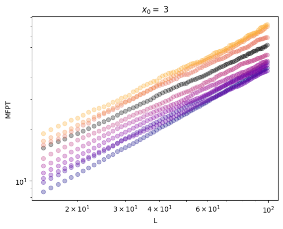
colors = plt.cm.plasma(np.linspace(0,1,len(betas)+2))
for res, c, beta in zip(results, colors, betas):
if round(beta, 1) == 1: c = 'k'
plt.loglog(Ls, res, 'o', c = c, alpha = 0.3)
plt.ylabel('MFPT'); plt.xlabel('L'); plt.title(fr'$x_0 =$ {x0}')Text(0.5, 1.0, '$x_0 =$ 3')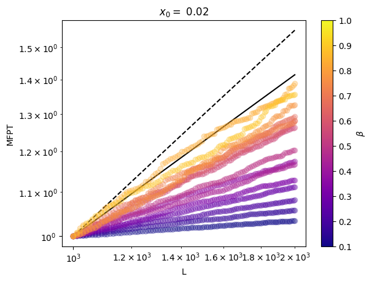
Smaller \(\beta\)
fig, ax = plt.subplots()
ax.plot(Ls, (Ls/Ls[0])**(1/2),c = 'k', label = r'$\sim \sqrt{L}$')
pw_scaling = np.log(Ls)*(Ls**(1/2))
ax.plot(Ls, pw_scaling/pw_scaling[0], c = 'k',ls = '--', label = r'$\sim \sqrt{L}\ln{L}$')
colors = plt.cm.plasma(np.linspace(0,1,len(betas)+2))
for res, c in zip(results, colors):
ax.loglog(Ls, res/res[0], 'o', c = c, alpha = 0.3)
cbar = fig.colorbar(plt.cm.ScalarMappable(norm= mcolors.Normalize(vmin=betas.min(),
vmax=betas.max()),
cmap=plt.cm.plasma),
ax = ax)
cbar.set_label(r'$\beta$')
plt.setp(ax, ylabel = 'MFPT', xlabel = 'L', title = fr'$x_0 =$ {x0}')[Text(0, 0.5, 'MFPT'), Text(0.5, 0, 'L'), Text(0.5, 1.0, '$x_0 =$ 0.02')]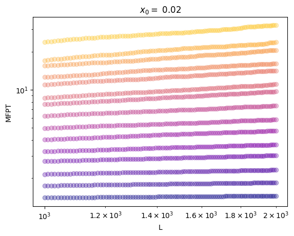
colors = plt.cm.plasma(np.linspace(0,1,len(betas)+2))
for res, c in zip(results, colors):
plt.loglog(Ls, res, 'o', c = c, alpha = 0.3)
plt.ylabel('MFPT'); plt.xlabel('L'); plt.title(fr'$x_0 =$ {x0}')Text(0.5, 1.0, '$x_0 =$ 0.02')
0%| | 0/100 [00:00<?, ?it/s]
0%| | 0/100 [00:00<?, ?it/s]
0%| | 0/100 [00:00<?, ?it/s]
0%| | 0/100 [00:00<?, ?it/s]
0%| | 0/100 [00:00<?, ?it/s]
0%| | 0/100 [00:00<?, ?it/s]
0%| | 0/100 [00:00<?, ?it/s]
0%| | 0/100 [00:00<?, ?it/s]
0%| | 0/100 [00:00<?, ?it/s]
0%| | 0/100 [00:00<?, ?it/s]
0%| | 0/100 [00:00<?, ?it/s]
0%| | 0/100 [00:00<?, ?it/s]
0%| | 0/100 [00:00<?, ?it/s]
0%| | 0/100 [00:00<?, ?it/s]
0%| | 0/100 [00:00<?, ?it/s]Full comparison
Saving the data for future tests
a,b,c = [0]*3for k in [a,b,c]:
print(k)
k = 120
0
0b0names = ['discrete', 'exp', 'inf_biexp', 'uninf_biexp', 'pw']
try:
datas = [mean, mean_exp, mean_biexp, mean_uninf_biexp, mean_pw]
for data, name in zip(datas, names):
np.save('scalings_mfpt/'+name+f'_N_{N}_T_{T}_x0_{x0}_L_{min(Ls)}-{max(Ls)}.npy', data)
else:
mean = np.load('scalings_mfpt/'+names[0]+f'_N_{N}_T_{T}_x0_{x0}_L_{min(Ls)}-{max(Ls)}.npy', data)
mean_exp = np.load('scalings_mfpt/'+names[1]+f'_N_{N}_T_{T}_x0_{x0}_L_{min(Ls)}-{max(Ls)}.npy', data)
mean_biexp = np.load('scalings_mfpt/'+names[2]+f'_N_{N}_T_{T}_x0_{x0}_L_{min(Ls)}-{max(Ls)}.npy', data)
mean_uninf_biexp = np.load('scalings_mfpt/'+names[3]+f'_N_{N}_T_{T}_x0_{x0}_L_{min(Ls)}-{max(Ls)}.npy', data)
mean_pw = np.load('scalings_mfpt/'+names[4]+f'_N_{N}_T_{T}_x0_{x0}_L_{min(Ls)}-{max(Ls)}.npy', data)fig, ax = plt.subplots(1, 2, figsize = (10, 5))
ax[0].plot(Ls, (Ls/Ls[0])**(1/2),c = 'k', label = r'$\sim \sqrt{L}$')
ax[0].plot(Ls, (Ls/Ls[0]), c = 'k',ls = '--', label = r'$\sim L$')
pw_scaling = np.log(Ls)*Ls**(1/2)
ax[0].plot(Ls, pw_scaling/pw_scaling[0], c = 'k',ls = ':', label = r'$\sim \sqrt{L}\ln{L}$')
ax[0].loglog(Ls, mean_pw/mean_pw[0],' o', alpha = 0.3, label = r'Power-law $\alpha = 1$')
ax[0].loglog(Ls, mean_biexp/mean_biexp[0],'o', alpha = 0.3, label = 'Informed bi-exponential')
ax[0].loglog(Ls, mean_uninf_biexp/mean_uninf_biexp[0],'o', alpha = 0.3, label = 'Uninformed bi-exponential')
ax[0].loglog(Ls, mean_exp/mean_exp[0],'o', alpha = 0.3, label = 'Exponential')
ax[0].loglog(Ls, mean/mean[0],'o', alpha = 0.3, label = 'Discrete')
ax[0].legend()
ax[1].loglog(Ls, mean_pw,' o', alpha = 0.3, label = r'Power-law $\alpha = 1$')
ax[1].loglog(Ls, mean_biexp,'o', alpha = 0.3, label = 'Informed bi-exponential')
ax[1].loglog(Ls, mean_uninf_biexp,'o', alpha = 0.3, label = 'Uninformed bi-exponential')
ax[1].loglog(Ls, mean_exp,'o', alpha = 0.3, label = 'Exponential')
ax[1].loglog(Ls, mean,'o', alpha = 0.3, label = 'Discrete')
plt.setp(ax, ylabel = 'MFPT', xlabel = 'L', title = fr'$x_0 =$ {x0}')[Text(0, 0.5, 'MFPT'),
Text(0.5, 0, 'L'),
Text(0.5, 1.0, '$x_0 =$ 3'),
Text(0, 0.5, 'MFPT'),
Text(0.5, 0, 'L'),
Text(0.5, 1.0, '$x_0 =$ 3')]
Reading results
mean_fpt = []
names_read = names#[:3]+[names[-1]]*len(betas)
idxbeta = 6
for idx, name in enumerate(names_read):
try: del collect_mean
except: pass
if name == 'biexp_inf': reps = 5500
else: reps = 500
for rep in range(reps):
if name == 'pw':
current_m = np.load(path+name+f'_beta{round(betas[idxbeta],3)}_N_{np.log10(Ns[-1]).astype(int)}_L_{np.log10(Ts[-1]).astype(int)}_{rep}.npy')
else:
current_m = np.load(path+name+f'_N_{np.log10(Ns[idx]).astype(int)}_L_{np.log10(Ts[idx]).astype(int)}_{rep}.npy')
# current_s = np.load(path+name+f'_N_{np.log10(Ns[idx]).astype(int)}_L_{np.log10(Ts[idx]).astype(int)}_{rep}_stats.npy')
try:
collect_mean = np.vstack((collect_mean, current_m))
# collect_stat = np.vstack((collect_stat, current_s))
except:
collect_mean = current_m
# collect_stat = current_s
mean_fpt.append(collect_mean)fig, ax = plt.subplots()
minL = 60
Lsplot = Ls[minL:]
for m, n in zip(mean_fpt, names_read):
if n == 'pw': n = r'pw $\beta \approx 1$'
mean = m.mean(0)#[minL:]
ax.plot(Ls, mean/mean[0], label = n)
ax.plot(Lsplot, 2.7*(Lsplot/Lsplot[0])**(1/2),c = 'k', label = r'$\sim \sqrt{L}$')
ax.plot(Lsplot, 5*(Lsplot/Lsplot[0]), c = 'k',ls = '--', label = r'$\sim L$')
pw_scaling = np.log(Lsplot)*Lsplot**(1/2)
ax.plot(Lsplot, 3.5*pw_scaling/pw_scaling[0], c = 'k',ls = ':', label = r'$\sim \sqrt{L}\ln{L}$')
plt.setp(ax, xscale = 'log', yscale = 'log', xlabel = 'L', ylabel = 'MFPT', title = fr'$x_0 = {x0}$')
ax.legend()<matplotlib.legend.Legend>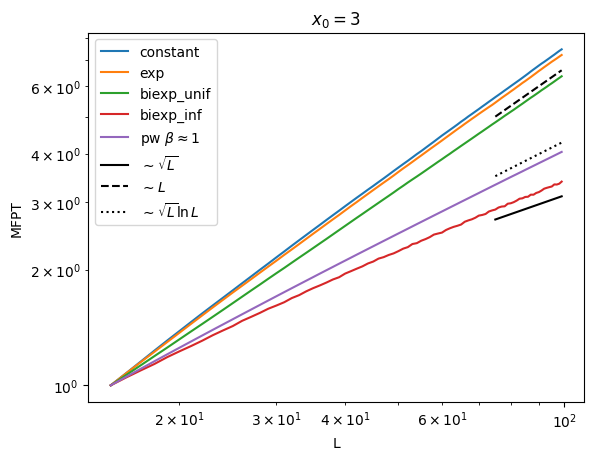
mean_fpt_pw = []
name = 'pw'#[:3]+[names[-1]]*len(betas)
for idxbeta, beta in enumerate(betas):
try: del collect_mean
except: pass
for rep in range(reps):
current_m = np.load(path+name+f'_beta{round(betas[idxbeta],3)}_N_{np.log10(Ns[-1]).astype(int)}_L_{np.log10(Ts[-1]).astype(int)}_{rep}.npy')
try:
collect_mean = np.vstack((collect_mean, current_m))
# collect_stat = np.vstack((collect_stat, current_s))
except:
collect_mean = current_m
# collect_stat = current_s
mean_fpt_pw.append(collect_mean)fig, ax = plt.subplots()
minL = 60
Lsplot = Ls[minL:]
colors = plt.cm.plasma(np.linspace(0,1,len(betas)+2))
for m, c in zip(mean_fpt_pw, colors):
mean = m.mean(0)[minL:]
ax.plot(Lsplot, mean/mean[0], c = c)
ax.plot(Lsplot, (Lsplot/Lsplot[0])**(1/2),c = 'k', label = r'$\sim \sqrt{L}$')
ax.plot(Lsplot, (Lsplot/Lsplot[0]), c = 'k',ls = '--', label = r'$\sim L$')
pw_scaling = np.log(Lsplot)*Lsplot**(1/2)
ax.plot(Lsplot, pw_scaling/pw_scaling[0], c = 'k',ls = ':', label = r'$\sim \sqrt{L}\ln{L}$')
plt.setp(ax, xscale = 'log', yscale = 'log', xlabel = 'L', ylabel = 'MFPT', title = fr'$x_0 = {x0}$')
ax.legend()
cbar = fig.colorbar(plt.cm.ScalarMappable(norm= mcolors.Normalize(vmin=betas.min(),
vmax=betas.max()),
cmap=plt.cm.plasma),
ax = ax)
cbar.set_label(r'$\beta$')
fit = []
for m, c in zip(mean_fpt_pw, colors):
mean = m.mean(0)[minL:]
fit.append(np.polyfit(np.log(Lsplot), np.log(mean/mean[0]), deg=1)[0])# Approx fit log(L)
app_log = np.polyfit(np.log(Lsplot), np.log(pw_scaling/pw_scaling[0]), deg=1)[0]
# Fit informed
mftp_inf = mean_fpt[-2].copy()
mean_inf = mftp_inf.mean(0)[minL:]
fit_informed = np.polyfit(np.log(Lsplot), np.log(mean_inf/mean_inf[0]), deg=1)[0]
# Plot
fig, ax = plt.subplots()
# plot powerlaw
ax.plot(betas, fit, c = 'k')
ax.scatter(betas, fit, c = colors[:len(betas)], zorder = 10)
for line, name, ls in zip([1, app_log, 1/2], [r'$L$', r'$\sim \sqrt{L}\ln{L}$', r'$\sqrt{L}$'], ['-', '--',':']):
ax.axhline(line, label = name, ls = ls, alpha = 0.5, c = 'k')
# plot informed
ax.axhline(fit_informed, label = 'Fit Exp informed', lw = 2)
ax.legend()
plt.setp(ax, xlabel = r'$\beta$', ylabel = 'Fit long time MFPT')[Text(0.5, 0, '$\\beta$'), Text(0, 0.5, 'Fit long time MFPT')]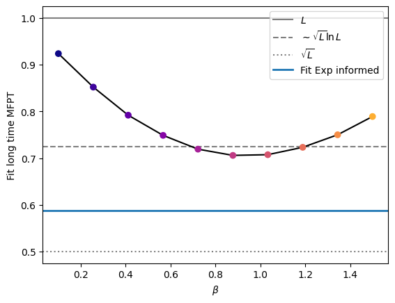
minL = 60
mean_inf = mftp_inf.mean(0)[minL:]
Lsplot = Ls[minL:]
plt.loglog(Lsplot, mean_inf/mean_inf[0])
plt.loglog(Lsplot, (Lsplot/Lsplot[0])**(0.6))
2D (not conclusive results)
constant_velocity_generator_2D
constant_velocity_generator_2D (N, T, time_sampler, velocity=1, **sample_args)
Given a sampler for length of time steps, generates a 2D trajectory considering a constant velocity in the sampled times. After each time step, we sample a new direction.
| Type | Default | Details | |
|---|---|---|---|
| N | Number of trajectories | ||
| T | Length of trajectories | ||
| time_sampler | Sampler of time of constant velocity | ||
| velocity | int | 1 | Velocity |
| sample_args |
N = 5; T = 150
trajs_lw_x, trajs_lw_y = constant_velocity_generator_2D(N, T, time_sampler = lw_step, beta = 1)
def single_steps(num_samples):
return np.ones(num_samples)
trajs_rw_x, trajs_rw_y = constant_velocity_generator_2D(N, T, time_sampler = single_steps, velocity = 1.2)Finished generating trajectories
Finished generating trajectoriesfig, ax = plt.subplots(1, 2)
for x, y in zip(trajs_lw_x, trajs_lw_y):
ax[0].plot(x, y)
ax[0].set_title('LW')
for x, y in zip(trajs_rw_x, trajs_rw_y):
ax[1].plot(x, y)
ax[1].set_title('RW');
MFPT calculator
mfpt_rw_2D
mfpt_rw_2D (N:int, T:int, x0:list, Ls:list, traj_generator:Callable, max_loop=5, **args_generator)
Calculates MFPT to boundaries at 0 and L starting in x0 in 2D
| Type | Default | Details | |
|---|---|---|---|
| N | int | Number of trajectories | |
| T | int | Lengths of trajectories | |
| x0 | list | Starting point of walk (in 2d) | |
| Ls | list | Boundary position | |
| traj_generator | Callable | Function generating the walk (must start in x0 = zero) | |
| max_loop | int | 5 | Max number of while loop if some walks do not reach the boundary |
| args_generator |
Results
Discrete walking
In this case we are already doing constant velocities, hence we can use the generator below:
N = int(1e4)
T = int(1e2)
x0 = [1, 1]
Ls = np.linspace(5, 150, 20)
reps = 10
results = np.array(Parallel(n_jobs=10)(delayed(mfpt_rw_2D)(N = N, T = T, x0 = x0, Ls = Ls,
traj_generator = constant_velocity_generator_2D,
time_sampler = single_steps)
for _ in tqdm(range(reps))), dtype = object)mean = results.mean(0)
plt.plot(Ls, mean[0]*(Ls/Ls[0])**(1/2),c = 'k', label = r'$\sim L^{1/2}$')
plt.plot(Ls, mean[0]*(Ls/Ls[0]), c = 'k',ls = '--', label = r'$\sim L$')
# plt.loglog(Ls, mean,'o', alpha = 0.8)
plt.errorbar(Ls, mean, yerr = results.astype(float).std(0))
plt.legend()
# plt.xlim(xmax = 150)<matplotlib.legend.Legend>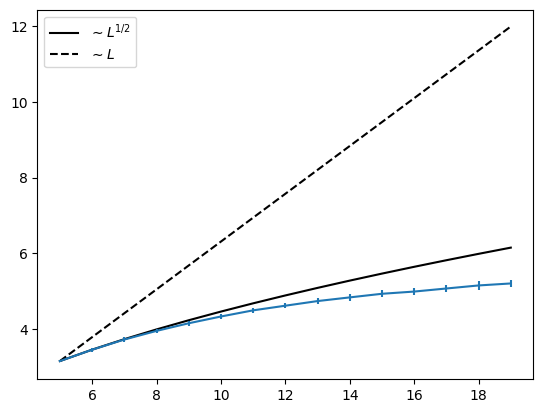
Exponential
N = int(1e2)
T = int(1e4)
x0 = [0.5, 0.5]
Ls = np.arange(15, 100)
reps = 20
results = np.array(Parallel(n_jobs=20)(delayed(mfpt_rw_2D)(N = N, T = T, x0 = x0, Ls = Ls,
traj_generator = constant_velocity_generator_2D,
time_sampler = exp_time_generator)
for _ in tqdm(range(reps))), dtype = object)mean_exp = results.mean(0)
plt.plot(Ls, mean_exp[0]*(Ls/Ls[0])**(1/2),c = 'k', label = r'$\sim L^2$')
plt.plot(Ls, mean_exp[0]*(Ls/Ls[0]), c = 'k',ls = '--', label = r'$\sim L$')
plt.loglog(Ls, mean_exp,'o', alpha = 0.3, label = 'Exponential')
plt.loglog(Ls, mean,'o', alpha = 0.3, label = 'Discrete')
plt.legend()
plt.xlabel('MFPT'); plt.ylabel('L'); plt.title(fr'$x_0 =$ {x0}')Text(0.5, 1.0, '$x_0 =$ [0.5, 0.5]')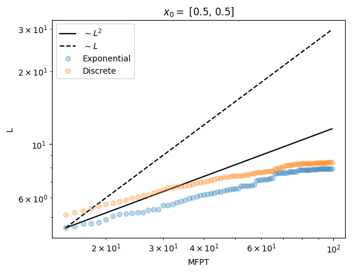
Biexponential
Uninformed
N = int(1e3)
T = int(1e5)
x0 = [0.5, 0.5]
Ls = np.arange(5, 30)
reps = 20*4
results = np.array(Parallel(n_jobs=5)(delayed(mfpt_rw_2D)(N = N, T = T, x0 = x0, Ls = Ls,
traj_generator = constant_velocity_generator_2D,
time_sampler = biexp_time_generator, w1 = 0.5, d1 = 1, d2 = 5)
for _ in tqdm(range(reps))), dtype = object)
mean_uninf_biexp = results.mean(0)plt.plot(Ls, (Ls/Ls[0])**(1/2),c = 'k', label = r'$\sim \sqrt{L}$')
# plt.plot(Ls, (Ls/Ls[0]), c = 'k',ls = '--', label = r'$\sim L$')
plt.loglog(Ls, mean_uninf_biexp/mean_uninf_biexp[0],'o', alpha = 0.3, label = 'Uninformed bi-exponential')
plt.loglog(Ls, mean_exp/mean_exp[0],'o', alpha = 0.3, label = 'Exponential')
plt.loglog(Ls, mean/mean[0],'o', alpha = 0.3, label = 'Discrete')
plt.legend()
plt.ylabel('MFPT'); plt.xlabel('L'); plt.title(fr'$x_0 =$ {x0}')Text(0.5, 1.0, '$x_0 =$ [0.5, 0.5]')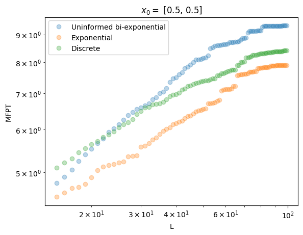
plt.loglog(Ls, mean_uninf_biexp,'o', alpha = 0.3, label = 'Uninformed bi-exponential')
plt.loglog(Ls, mean_exp,'o', alpha = 0.3, label = 'Exponential')
plt.loglog(Ls, mean,'o', alpha = 0.3, label = 'Discrete')
plt.legend()
plt.ylabel('MFPT'); plt.xlabel('L'); plt.title(fr'$x_0 =$ {x0}')Text(0.5, 1.0, '$x_0 =$ [0.5, 0.5]')
Informed
mfpt_informed_rw_2D
mfpt_informed_rw_2D (N:int, T:int, x0:list, Ls:list, traj_generator:Callable, max_loop=5, **args_generator)
Calculates MFPT to boundaries at 0 and L starting in x0 in 2D
| Type | Default | Details | |
|---|---|---|---|
| N | int | Number of trajectories | |
| T | int | Lengths of trajectories | |
| x0 | list | Starting point of walk (in 2d) | |
| Ls | list | Boundary position | |
| traj_generator | Callable | Function generating the walk (must start in x0 = zero) | |
| max_loop | int | 5 | Max number of while loop if some walks do not reach the boundary |
| args_generator |
N = int(1e2)
T = int(1e4)
x0 = 3
Ls = np.arange(15, 100)
reps = 20
results = np.array(Parallel(n_jobs=10)(delayed(mfpt_informed_rw)(N = N, T = T, x0 = x0, Ls = Ls,
traj_generator = constant_velocity_generator,
time_sampler = biexp_time_generator)
for _ in tqdm(range(reps))), dtype = object)
mean_biexp = results.mean(0)plt.plot(Ls, (Ls/Ls[0])**(1/2),c = 'k', label = r'$\sim \sqrt{L}$')
plt.plot(Ls, (Ls/Ls[0]), c = 'k',ls = '--', label = r'$\sim L$')
plt.loglog(Ls, mean_biexp/mean_biexp[0],'o', alpha = 0.3, label = 'Informed bi-exponential')
plt.loglog(Ls, mean_uninf_biexp/mean_uninf_biexp[0],'o', alpha = 0.3, label = 'Uninformed bi-exponential')
plt.loglog(Ls, mean_exp/mean_exp[0],'o', alpha = 0.3, label = 'Exponential')
plt.loglog(Ls, mean/mean[0],'o', alpha = 0.3, label = 'Discrete')
plt.legend()
plt.ylabel('MFPT'); plt.xlabel('L'); plt.title(fr'$x_0 =$ {x0}')Power-law
N = int(1e3)
T = int(1e4)
x0 = [0.5, 0.5]
Ls = np.arange(15, 100)
reps = 20
beta = 1
results = np.array(Parallel(n_jobs=20)(delayed(mfpt_rw_2D)(N = N, T = T, x0 = x0, Ls = Ls,
traj_generator = constant_velocity_generator_2D,
time_sampler = pdf_discrete_sample,
pdf_func=pdf_powerlaw,
L_max = T, beta = beta,)
for _ in tqdm(range(reps))), dtype = object)
mean_pw = results.mean(0)fig, ax = plt.subplots(1, 2, figsize = (10, 5))
ax[0].plot(Ls, (Ls/Ls[0])**(1/2),c = 'k', label = r'$\sim \sqrt{L}$')
ax[0].plot(Ls, (Ls/Ls[0]), c = 'k',ls = '--', label = r'$\sim L$')
pw_scaling = np.log(Ls)*Ls**(1/2)
ax[0].plot(Ls, pw_scaling/pw_scaling[0], c = 'k',ls = ':', label = r'$\sim \sqrt{L}\ln{L}$')
ax[0].loglog(Ls, mean_pw/mean_pw[0],' o', alpha = 0.3, label = r'Power-law $\alpha = 1$')
# ax[0].loglog(Ls, mean_biexp/mean_biexp[0],'o', alpha = 0.3, label = 'Informed bi-exponential')
ax[0].loglog(Ls, mean_uninf_biexp/mean_uninf_biexp[0],'o', alpha = 0.3, label = 'Uninformed bi-exponential')
ax[0].loglog(Ls, mean_exp/mean_exp[0],'o', alpha = 0.3, label = 'Exponential')
ax[0].loglog(Ls, mean/mean[0],'o', alpha = 0.3, label = 'Discrete')
ax[0].legend()
ax[1].loglog(Ls, mean_pw,' o', alpha = 0.3, label = r'Power-law $\alpha = 1$')
# ax[1].loglog(Ls, mean_biexp,'o', alpha = 0.3, label = 'Informed bi-exponential')
ax[1].loglog(Ls, mean_uninf_biexp,'o', alpha = 0.3, label = 'Uninformed bi-exponential')
ax[1].loglog(Ls, mean_exp,'o', alpha = 0.3, label = 'Exponential')
ax[1].loglog(Ls, mean,'o', alpha = 0.3, label = 'Discrete')
plt.setp(ax, ylabel = 'MFPT', xlabel = 'L', title = fr'$x_0 =$ {x0}')[Text(0, 0.5, 'MFPT'),
Text(0.5, 0, 'L'),
Text(0.5, 1.0, '$x_0 =$ [0.5, 0.5]'),
Text(0, 0.5, 'MFPT'),
Text(0.5, 0, 'L'),
Text(0.5, 1.0, '$x_0 =$ [0.5, 0.5]')]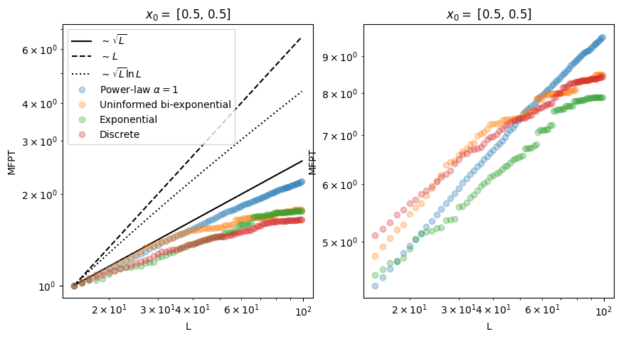
NBDEV Export
from nbdev import nbdev_export; nbdev_export()